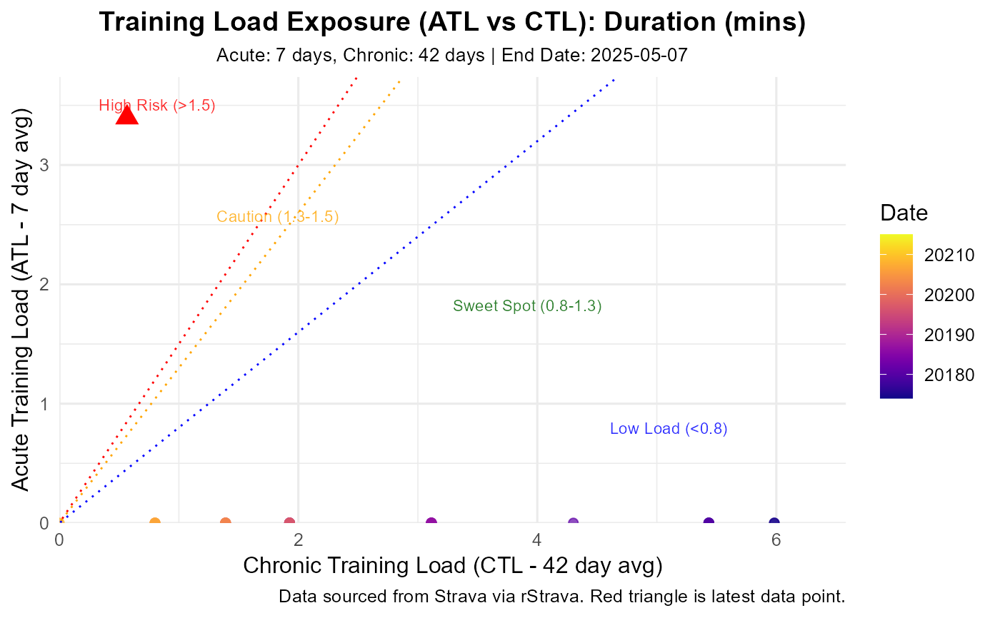

Visualizes the relationship between Acute and Chronic Training Load.
Usage
plot_exposure(
stoken,
activity_type = c("Run", "Ride", "VirtualRide", "VirtualRun"),
load_metric = "duration_mins",
acute_period = 7,
chronic_period = 42,
user_ftp = NULL,
user_max_hr = NULL,
user_resting_hr = NULL,
end_date = NULL,
risk_zones = TRUE,
exposure_df = NULL
)Arguments
- stoken
A valid Strava token from
rStrava::strava_oauth(). Required unlessexposure_dfis provided.- activity_type
Type(s) of activities to include (e.g., "Run", "Ride"). Default uses common types.
- load_metric
Method for calculating daily load (e.g., "duration_mins", "tss", "hrss"). Default "duration_mins". See
calculate_exposurefor details on approximate TSS/HRSS calculations.- acute_period
Days for acute load window (e.g., 7).
- chronic_period
Days for chronic load window (e.g., 42). Must be >
acute_period.- user_ftp
Required if
load_metric = "tss". Your FTP.- user_max_hr
Required if
load_metric = "hrss". Your max HR.- user_resting_hr
Required if
load_metric = "hrss". Your resting HR.- end_date
Optional. Analysis end date (YYYY-MM-DD string or Date). Defaults to today.
- risk_zones
Add background shading for typical ACWR risk zones? Default
TRUE.- exposure_df
Optional. A pre-calculated data frame from
calculate_exposure. If provided,stokenand other calculation parameters are ignored. Must containdate,atl,ctl(andacwrifrisk_zones = TRUE).
Details
Plots ATL vs CTL, optionally showing risk zones based on ACWR. Uses
pre-calculated data or calls calculate_exposure.
Visualizes training state by plotting ATL vs CTL (related to PMC charts).
Points are colored by date, latest point is highlighted (red triangle).
Optional risk zones (based on ACWR thresholds ~0.8, 1.3, 1.5) can be shaded.
If exposure_df is not provided, it calls calculate_exposure first.
Examples
# Example using simulated data
data(Athlytics_sample_data)
# Ensure exposure_df is named and other necessary parameters like activity_type are provided
p <- plot_exposure(exposure_df = athlytics_sample_exposure, activity_type = "Run")
#> Generating plot...
print(p)

# \donttest{
# Example using real data (requires authentication)
# stoken <- rStrava::strava_oauth("YOUR_APP_NAME",
# "YOUR_APP_CLIENT_ID",
# "YOUR_APP_SECRET",
# cache = TRUE)
# Plot Exposure trend for Runs (last 6 months)
# plot_exposure(stoken = stoken, # Replace stoken with a valid token object
# activity_type = "Run",
# end_date = Sys.Date(), # For internal calculate_exposure: fetches prior data.
# # Note: start_date applies to the internal calculate_exposure call.
# user_ftp = 280) # Example, if load_metric = "tss"
# Plot Exposure trend for Rides
# plot_exposure(stoken = stoken, # Replace stoken with a valid token object
# activity_type = "Ride",
# user_ftp = 280) # Example, provide if load_metric = "tss"
# Plot Exposure trend for multiple Run types (risk_zones = FALSE for this example)
# plot_exposure(stoken = stoken, # Replace stoken with a valid token object
# activity_type = c("Run", "VirtualRun"),
# risk_zones = FALSE,
# user_ftp = 280) # Example, provide if load_metric = "tss"
# }